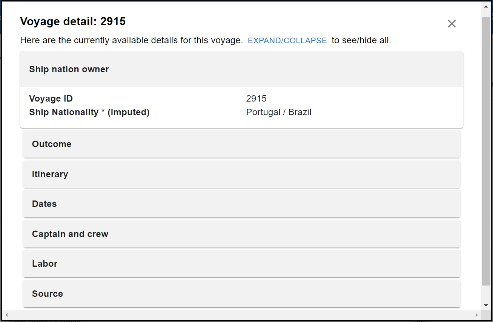

Modal
Overview
The Modal component is an interface for visualizing voyage data and is used at the table component in both /voyage and /past endpoint.
It employs MUI Modal and Accordion as the main components.
An example Voyage Modal component looks like following:

Packages Used
Props
| Parameter Names | Functionality |
|---|---|
| voyageOpen | Specify whether to render the voyage modal in front of the webpage |
| setVoyageOpen | Set the boolean value of voyageOpen |
| voyageId | Specify the voyage ID to open the corresponding modal |
| setUVOpen | Set the boolean value of UVOpen |
| setUrl | Set the value of url |
Customization
- The style of the modal can be set in
modalStylein the file. - The MUI Accordion is rewritten to support expanding either single or multiple items.
Directory
The following directory shows all files related to Modal.
src
|
|___CommonComponent
|
|___VoyageModal.js